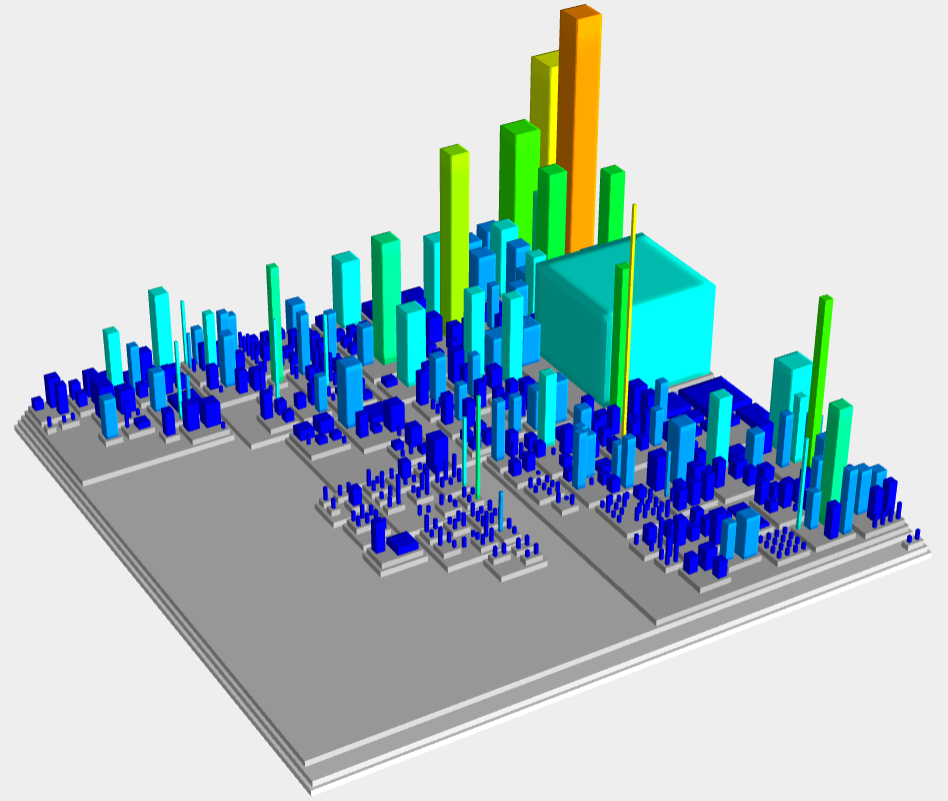

Nolix in CodeCity
The graphic visualizes the source code of the whole Nolix library. Each block represents a class. The more methods a class contains the higher the block is.
The graphic visualizes the source code of the whole Nolix library. Each block represents a class. The more methods a class contains the higher the block is.